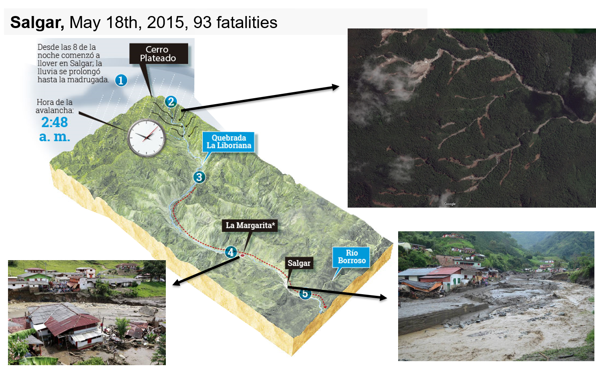
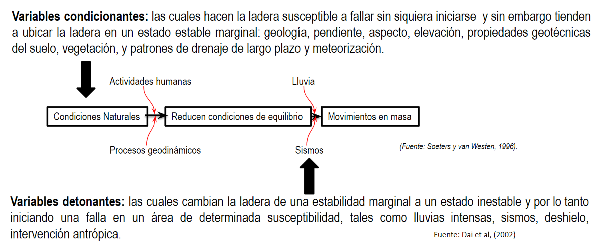
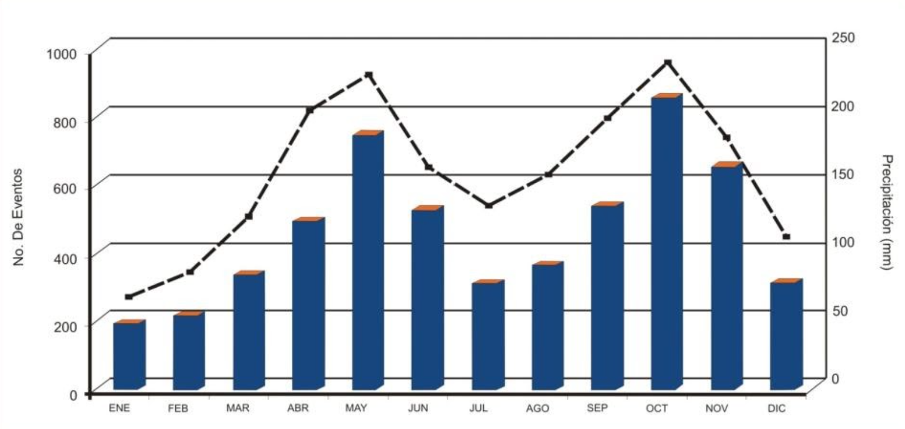
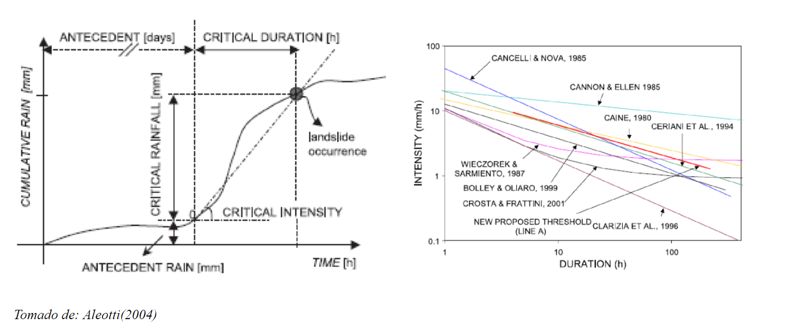
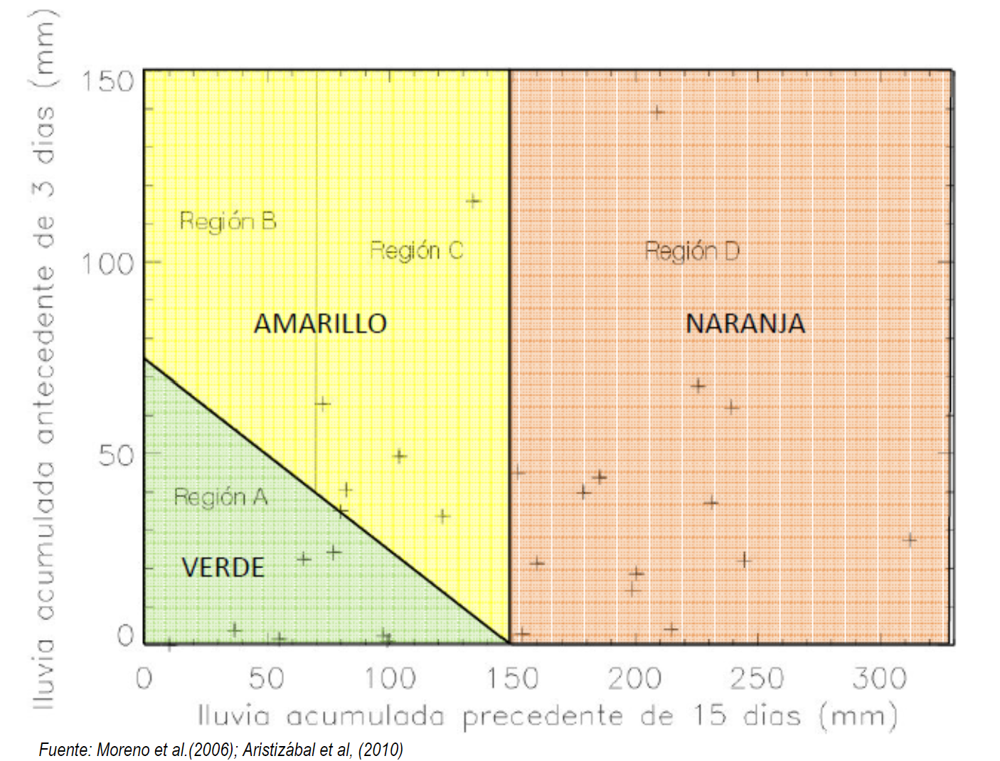
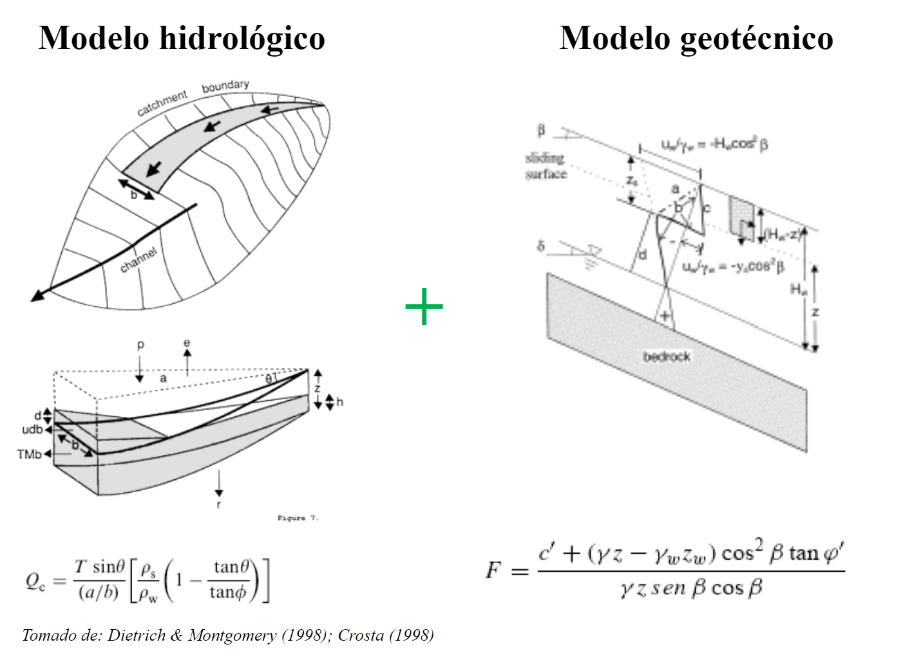
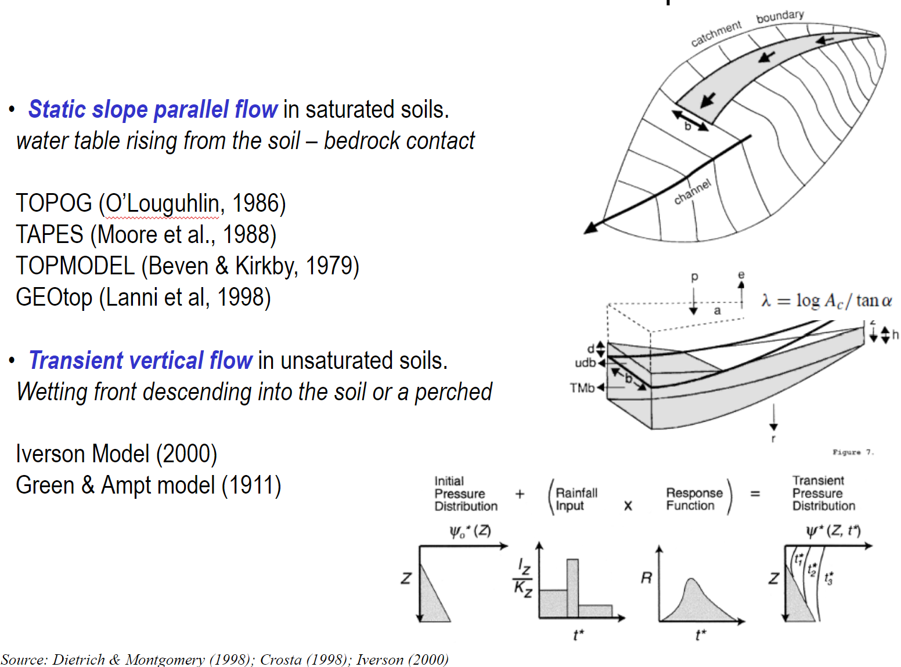
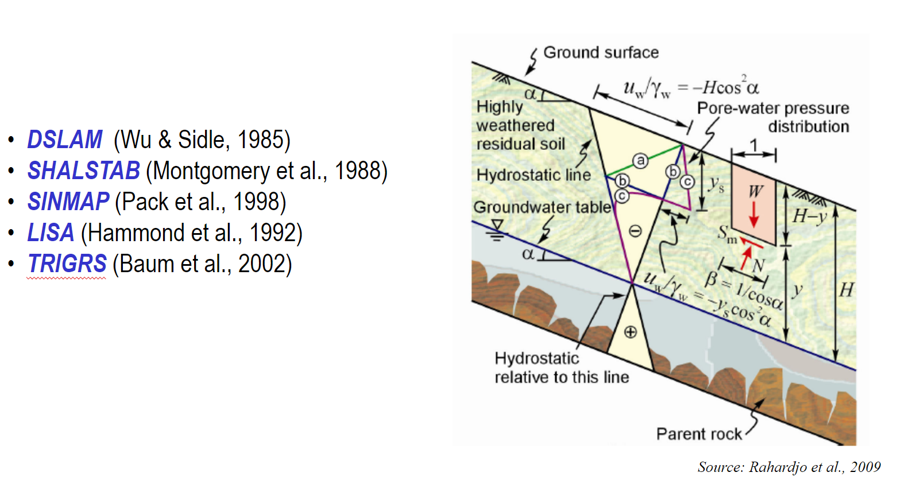

Aplicación de métodos de predicción de la influencia de las lluvias en movimientos en masa y su seguimiento a través de la herramienta WARN
Edier Aristizábal
Departamento de Geociencias y Medio Ambiente, Universidad Nacional de Colombia, Medellín, Colombia

Geoamenazas en Colombia

Escenario de riesgo

Ejemplos...
Causas
La lluvia como factor detonante
Sistemas de alerta temprana

Sistemas de alerta temprana

Umbrales empiricos
Umbrales en Antioquia
Umbrales físicos
Modelos hidrológicos
Modelos geotécnicos
Umbrales para cluster de movimientos en masa

https://geohazards.com.co